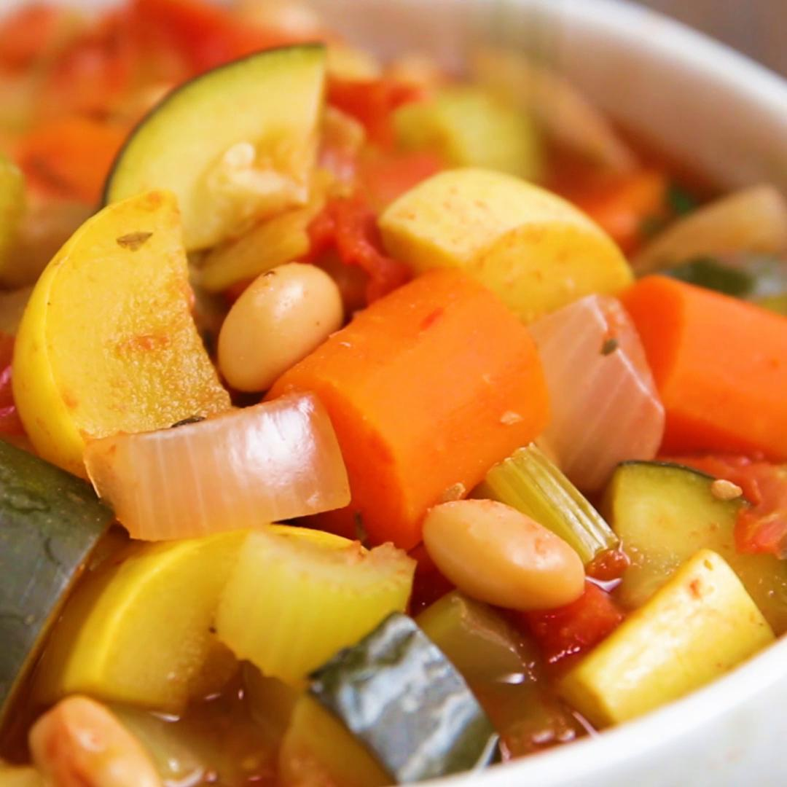

Vegan Enchiladas
Ingredients
for 4 servings
SAUCE
- vegetable oil
- flour, rice flour for gluten-free
- chili powder
- dried oregano
- garlic powder
- salt
- tomato paste
- vegetable broth(470 mL)
FILLING
- ½ white onion
- 1 bell pepper
- 1 zucchini
- salt, to taste
- pepper, to taste
- 1 can black beans
- olive, sliced (50 g)
- green onion
- cilantro, as garnish or in the filling
- 8 corn tortillas
- avocado, to top
NON-DAIRY SOUR CREAM
- raw cashews (65 g)
- water, hot water(120 mL)
- lemon juice
- salt
Preparation
- In a medium saucepan, whisk together oil and flour over low heat. Add spices and mix together.
- Slowly add the veggie broth and chili powder while whisking continuously. Let simmer for a few minutes until it begins to thicken slightly.
- In a separate pot, lightly sauté the onion and peppers for a few minutes, before adding the zucchini, and finally the black beans. Season with pepper and a pinch of salt.
- Soften the corn tortillas by wrapping in a damp paper towel and microwaving for 10 seconds.
- Next, spread some of the sauce over the tortilla, and add the filling. Roll and place lined up in a baking dish. Pour the rest of the sauce over the enchiladas. Sprinkle with olives and green onions.
- Cover with foil and bake at 350˚ (177˚C) for 20 minutes.
- Soak cashews in hot water for 10 minutes (microwave works) add salt and lemon juice. Blend until creamy.
- Serve with avocado, cilantro, and a dollop of non-dairy sour cream.
- Enjoy!
Vegetarian Baked Beans
Ingredients
for 6 servings
- olive oil
- 1 small yellow onion, diced
- 3 cloves garlic, minced
- smoked paprika
- chili powder
- mustard powder
- salt
- pepper
- tomato paste (110 g)
- maple syrup (85 g)
- molasses
- low sodium soy sauce
- apple cider vinegar
- liquid smoke
- low sodium vegetable broth (180 mL)
- great northern beans, 3 cans, drained and rinsed
Preparation
- Preheat the oven to 350ºF (180ºC).
- In a large saucepan, heat the olive oil over medium heat. Once the oil begins to shimmer, add the onion and cook for 4-5 minutes, until semi-translucent.
- Add the garlic and cook for another 2-3 minutes, until fragrant.
- Add the paprika, chili powder, mustard powder, salt, and pepper and cook for 2 more minutes, until the spices are fragrant.
- Add the tomato paste, maple syrup, molasses, soy sauce, apple cider vinegar, and liquid smoke and stir for 1-2 minutes, until well-combined.
- Then, add the vegetable broth and stir until smooth, about 1 minute.
- Add the beans and stir for 1-2 minutes, until evenly coated.
- Cover and bake for 40 minutes, until the beans are bubbling. Uncover and bake for another 10 minutes, or until desired consistency is reached.
- Stir well and serve.
- Enjoy!
The best vegan vanilla ice cream
Ingredients
for 1 pint
- cashews, ½ cup (65 g) if just making enough for the ice cream(390 g)
- water (60 mL)
- organic sugar(250 g)
- cocoa butter
- coconut oil
- salt
- coconut milk(240 mL)
- vanilla extract
- 1 vanilla bean)
SPECIAL EQUIPMENT
Ice cream maker
Preparation
- Place the cashews in a large bowl. Add enough room-temperature water to cover the cashews.
- Cover the bowl with a kitchen towel and soak overnight.
- Place the bowl of an ice cream machine in the freezer overnight.
- Add the cashews and soaking water to a blender.
- Blend, starting on low speed and increasing to high until smooth and frothy, about 40 seconds. Strain into a large bowl through a fine-mesh sieve or cheesecloth.
- Reserve 1 cup (240 ml) of cashew milk for the ice cream and store the rest in the refrigerator for up to a week for another use.
- n a small saucepan over medium heat, combine the water and sugar and cook, stirring constantly, until the mixture is clear, about 2 minutes.
- Whisk in the cocoa butter, coconut oil, and salt.
- Remove the pan from the heat and set aside.
- In a blender, combine the cashew milk and coconut milk. Blend on low speed. With the blender running, pour in the sugar mixture to emulsify. Continue until well-blended, about 2 minutes.
- Pour the mixture into a large metal bowl and mix in the vanilla extract. Scrape in the seeds from the vanilla bean and whisk to combine.
- Chill the base in the refrigerator for 1 hour.
- Add the chilled base to the ice cream maker and churn for 1 hour, or as long as the machine requires, until thick and creamy.
- Transfer the ice cream to a loaf pan and freeze overnight.
- Scoop and serve immediately.
- Enjoy!
Vegetarian gumbo
Ingredients
for 5 servings
- olive oil, divided
- yellow onion, diced and divided (150 g)
- cremini mushroom, finely chopped (280 g)
- 6 cloves garlic, minced and divided
- low sodium soy sauce
- dried thyme, divided
- smoked paprika, divided
- dried oregano, divided
- cayenne pepper, divided
- vegan worcestershire sauce, divided
- liquid smoke, divided
- salt, plus more to taste, divided
- pepper, divided
- cannellini bean, 1 can, drained and rinsed(425 g)
- bread crumbs(85 g) vital wheat gluten, or bread crumbs (40 g)
- vegetable broth, plus 2 tablespoons, divided (840 mL)
- all purpose flour
- 1 stalk celery, diced okra, sliced into 1/2-in (1 cm) rounds(200 g)
- 1 green bell pepper, seeded and diced tomato, crushed(300 g)
- red kidney beans, 1 can, drained and rinsed(425 g)
- brown rice, cooked, for serving
- fresh parsley, chopped, for serving
Preparation
- In a large pot, heat 1 tablespoon of olive oil over medium heat. Once the oil begins to shimmer, add ½ cup (75g) diced onion and cook for 3-4 minutes, until semi-translucent.
- Add the mushrooms and cook for 5 minutes, until most of the juices have evaporated.
- Add 2 cloves of minced garlic, the soy sauce, 1 teaspoon thyme, 1 teaspoon paprika, ½ teaspoon oregano, ¼ teaspoon cayenne, 2 teaspoons vegan Worcestershire sauce, ½ teaspoon liquid smoke, ½ teaspoon salt, and ¼ teaspoon pepper and cook for another 4-5 minutes, until all of the liquid has evaporated and the spices are fragrant.
- Add the cannellini beans to a medium bowl and mash until mostly smooth (a few lumps are okay). Then, add the mushroom mixture, bread crumbs, vital wheat gluten, and 2 tablespoons vegetable broth and mix well until combined. Use your hands to knead the mixture until cohesive, then begin to roll about a tablespoon at a time of the mixture into “meatballs”.
- In the same large pot, heat 3 tablespoons of olive oil over medium heat. Once the oil begins to shimmer, add the meatballs and cook for about 5 minutes on each side, until golden brown. Remove the meatballs from the pot and set aside.
- Add the remaining 2 tablespoons of olive oil to the pot, along with the flour. Stir the roux continuously with a wooden spoon for about 3-4 minutes, until the consistency resembles wet sand.
- Add the remaining ½ cup (75g) diced onion, the celery, and the okra to the pot and cook for 4-5 minutes, until the onion is semi-translucent.
- Add the remaining 4 cloves of minced garlic and the green bell pepper and cook for another 3-4 minutes, until the garlic is fragrant.
- Add the remaining teaspoon of vegan Worcestershire sauce, ½ teaspoon liquid smoke, 1 teaspoon thyme, ½ teaspoon oregano, 1 teaspoon paprika, ¼ teaspoon cayenne, and ½ teaspoon pepper and cook for 4 more minutes, until the spices are fragrant.
- Add the crushed tomatoes and stir until combined. Then, add the red beans and add the remaining 3½ cups (840ml) vegetable broth and stir until well combined. Simmer on low heat for 30 minutes, stirring from time to time, until the gumbo has thickened.
- Season with salt to taste. Then, add the meatballs and stir to incorporate.
- Serve over rice and garnish with parsley.
- Enjoy!
Low-carb chips
Ingredients
for 4 servings
- 1 ¾ cups shredded mozzarella cheese (175 g)
- ¾ cup almond flour (75 g)
- 2 tablespoons cream cheese
- 1 medium egg
- 1 teaspoon cumin
- ½ teaspoon chili powder
Preparation
- Preheat the oven to 425°F (220°C).
- Mix the shredded mozzarella and almond flour in a medium microwaveable bowl. Stir until combined, then add the cream cheese.
- Microwave for 1 minute. Take out and stir until a dough-like texture forms.
- Add the egg, cumin, and chili powder. Mix until everything is well incorporated.
- Place the dough between 2 sheets of parchment paper. Using a rolling pin, flatten dough into a thin layer. The thinner the layer, the crispier the chips are! Take off the top parchment paper layer.
- Transfer the dough with the bottom piece of parchment paper to a baking sheet.
- Bake for 12-15 minutes, or until browned on the top.
- Remove from the oven and cut into squares with a pizza cutter or knife.
- Serve with your favorite dip.
- 92 total carbs 65 dietary fiber 27 net carbs per serving 06g net carbs per serving (about 10 chips)
- Enjoy!

Low-carb Biscuits and Gravy
Ingredients
for 6 servings
BISCUITS
- 2 cups almond flour (190 g)
- 1 tablespoon baking powder
- salt
- ½ cup plain greek yogurt (140 g)
- 2 large eggs
- 2 tablespoons honey
GRAVY
- oil, of choice, for cooking
- 1 lb lean sausage, or ground turkey (455 g)
- ¼ cup almond flour (25 g)
- ¼ teaspoon cayenne
- ¼ teaspoon paprika
- ½ tablespoon fresh rosemary, chopped
- ½ tablespoon fresh sage, chopped
- salt, to taste
- pepper, to taste
- 2 cups milk, of choice (480 mL)
Preparation
- Preheat the oven to 350°F (180°C). Line a baking sheet with parchment paper.
- Make the biscuits: In a medium bowl, add the almond flour, baking powder, and salt. Whisk to combine.
- In a separate large bowl, add the Greek yogurt, eggs, and honey. Whisk to combine.
- Sift the dry ingredients through a fine-mesh sieve into the wet ingredients. Mix to combine until fluffy. Do not overmix.
- Using a large ice cream scoop or a large spoon, scoop dough onto the lined baking sheet, spacing evenly. You should have about 6 biscuits. (If the oven is not ready, keep biscuits in the refrigerator so that they do not spread out and flatten.)
- Bake for 15-20 minutes, or until golden brown.
- Make the gravy: Drizzle a bit of oil in a large skillet over medium-high heat, then add the sausage and cook 7-10 minutes, or until browned.
- Reduce the heat to medium-low and add ¼ cup (25 g) of almond flour, the cayenne, paprika, rosemary, sage, salt, and pepper. Stir to combine, then add the milk.
- Simmer the gravy until it reaches your desired consistency, stirring occasionally. You can add up to ¼ cup (25 g) more almond flour for a thicker, heartier gravy.
- Serve the gravy hot, poured over a warm biscuit.
- Enjoy!
Slow-cooker dinner packs
Ingredients
for 4 servings
- 4 tomatoes, diced
- 3 carrots, thick slices
- 1 zucchini, sliced
- 1 yellow squash, sliced
- 2 stalks celery, sliced
- ½ white onion
- 2 cups bean, of choice (340 g)
- 2 cups water, or veggie broth, needed at time of cooking (470 mL)
MARINADE
- 1 cup tomato sauce (260 g)
- 1 tablespoon garlic, minced
- 1 teaspoon dried thyme
- 1 teaspoon dried oregano
- salt, to taste
- pepper, to taste
Preparation
- Mix tomato sauce, garlic, thyme, oregano, salt, and pepper in small bowl or measuring cup.
- In a large, gallon-sized freezer bag, add in tomatoes, carrots, zucchini, yellow squash, celery, white onion, and beans of choice. Pour the tomato sauce mixture over beans and vegetables.
- Seal freezer bag and ensure excess air is squeezed out.
- Place in freezer and store up to 3 months.
- When ready to enjoy, thaw completely and pour contents into slow cooker. Add water or veggie broth.
- Cook on low for 6 hours, or high for 3 hours, or until carrots are tender.
- Enjoy!

Creamy Lemon Butter Chicken
Ingredients
for 4 servings
- 6 bone-in, skin-on chicken thighs
- 1 tablespoon paprika
- salt, to taste
- pepper, to taste
- 3 tablespoons unsalted butter
- 3 cloves garlic
- ½ cup heavy cream (120 mL)
- ¼ cup parmesan cheese (30 g)
- 1 lemon, juiced
- 2 cups fresh baby spinach (85 g)
- 1 teaspoon dried thyme
- 1 cup chicken broth (240 mL)
Preparation
- Season chicken thighs with salt, pepper, and paprika.
- Melt 2 Tbsp. butter in a large oven-proof skillet over medium high heat. Add chicken, skin-side down, and sear both sides until golden brown. Drain excess fat and set aside.
- Melt 1 Tbsp. butter in the skillet. Add garlic, stir until fragrant, then add chicken broth, heavy cream, Parmesan, lemon juice, thyme, and stir. Bring to boil, then reduce heat to low.
- Stir in spinach, simmer until spinach has wilted and the sauce has thickened.
- Return chicken to the skillet. Bake at 400˚F (200˚C) for 25 minutes.
- Enjoy!